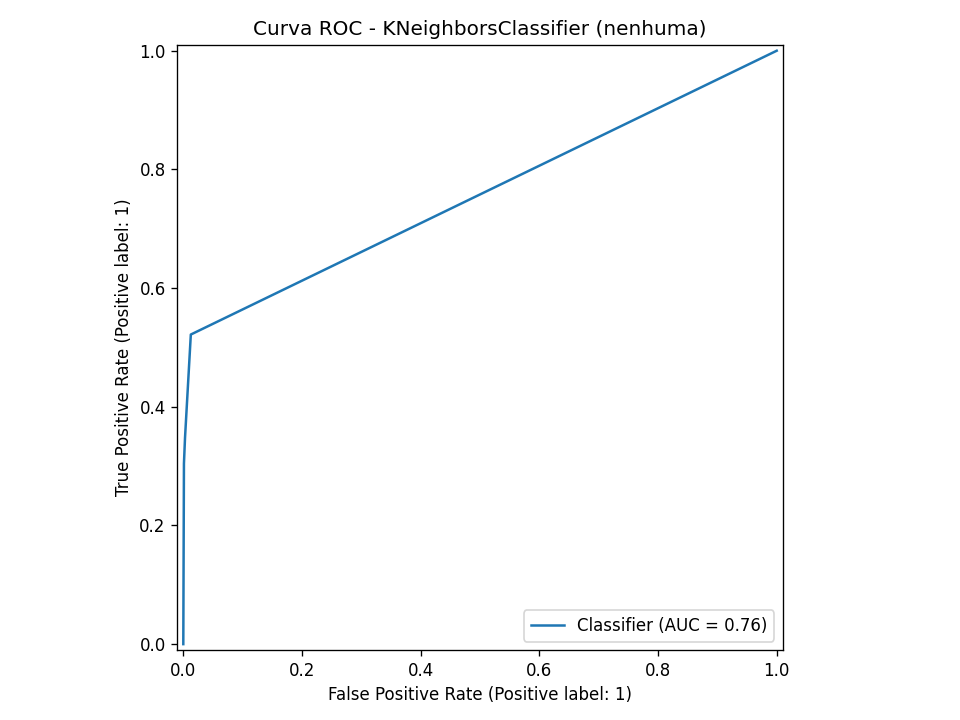
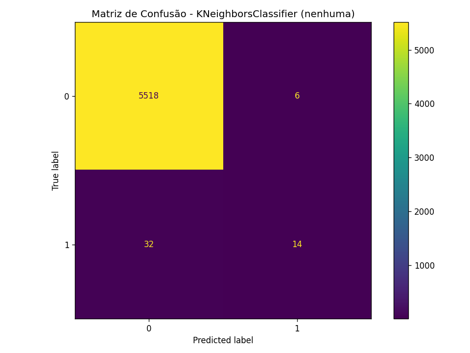
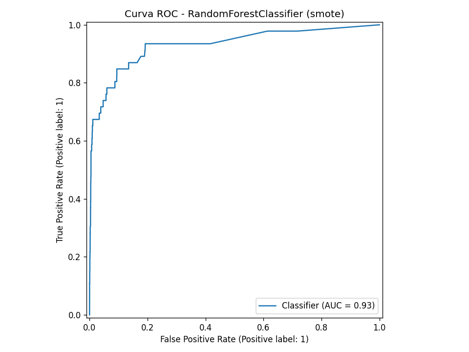
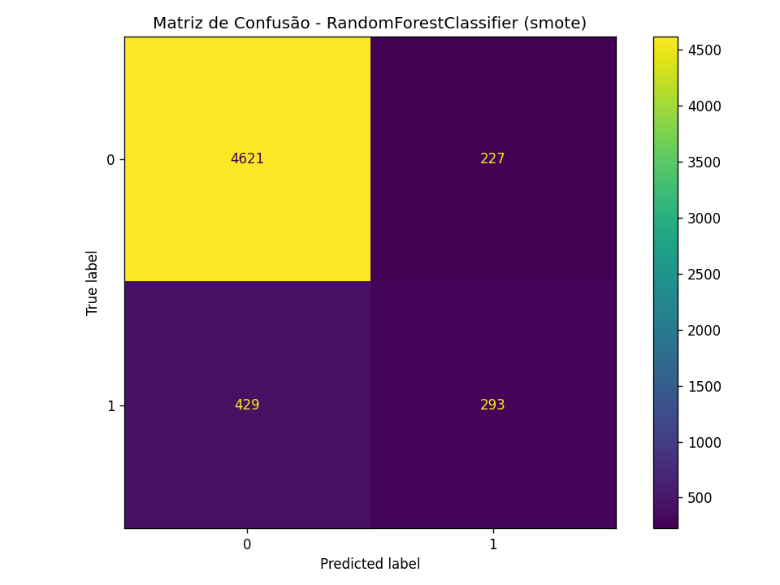
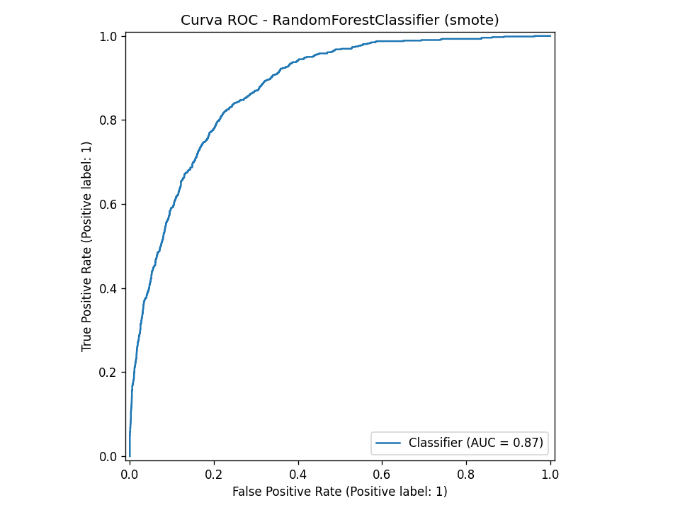
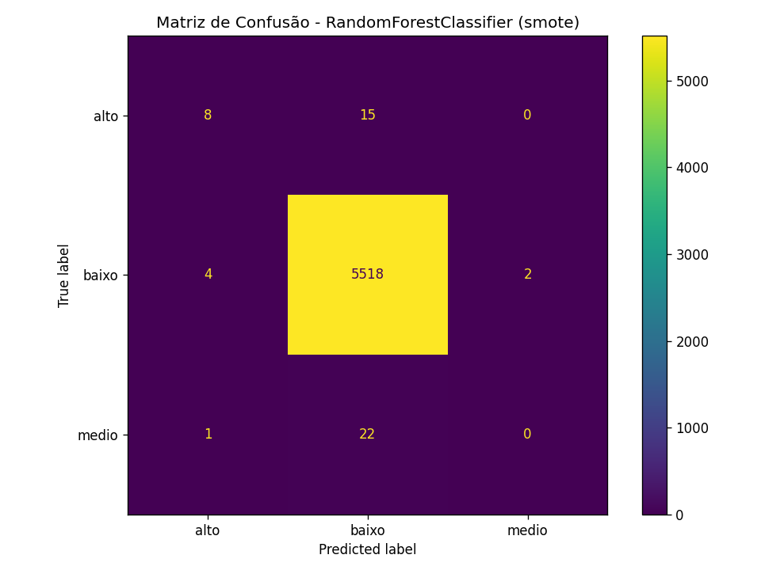

Classificação supervisionada — desmatamento, embargos e risco municipal
Projeto: Análise de Desmatamento, Atividade Econômica e Impacto Socioambiental
Pergunta central: quais municípios merecem monitoramento preventivo no próximo ano?
dataset_preditivo_com_precos.parquet| Aspecto | Valor |
|---|---|
| Linhas brutas | 796.560 |
Após dedup (cod_ibge + ano) | 22.280 |
| Features | 41 numéricas + 3 categóricas |
| Treino / teste | 11.140 / 5.570 |
Três targets:
tem_desmatamento_proximo_ano — 99,5% classe 0tem_embargos_proximo_ano — 90% / 10%classe_risco_proximo_ano — baixo / medio / altogroupby(cod_ibge).shift(-1)Split temporal simula uso real: treinar no passado, avaliar em ano futuro não visto.
F1 weighted alto pode esconder falha na classe minoritária.
Desmatamento — classe 1: 0,5%
Embargos — classe 1: 9,9%
Multiclasse — medio/alto: 0,2% cada
| Problema | Melhor modelo | F1 | ROC-AUC | Observação |
|---|---|---|---|---|
| Desmatamento | KNN (nenhuma) | 0,9918 | 0,76 | F1 enganoso |
| Embargos | RF + SMOTE | 0,8739 | 0,87 | Mais equilibrado |
| Multiclasse | RF + SMOTE | 0,9897 | N/A | F1 macro ~0,48 |
Compare sempre com DummyClassifier e analise recall da classe positiva.
Ganho real: detectar 14 de 46 municípios com desmatamento (vs. 0 do baseline).

Curva ROC — KNeighborsClassifier

KNN — melhor F1 weighted

RF+SMOTE — melhor ROC-AUC (0,93), trade-off com recall
NearMiss degradou performance (accuracy ~49%) — inadequado para classe <1%
Problema mais equilibrado — SMOTE ajudou de fato.

Matriz de confusão — RF + SMOTE

| Métrica | Dummy | RF+SMOTE |
|---|---|---|
| Recall classe 1 | 0% | 41% |
| F1 classe 1 | 0% | 47% |
| ROC-AUC | 0,50 | 0,87 |
| Métrica | Valor |
|---|---|
| F1 weighted (RF+SMOTE) | 0,9897 |
| F1 macro | 0,48 |
| Recall classe medio | 0% |
| Recall classe alto | 35% |

Matriz de confusão — RF + SMOTE (multiclasse)
Apenas 46 positivos no teste (23 medio + 23 alto) — granularidade fine-grained inviável.
| Notebook | Tópico | Aplicação no projeto |
|---|---|---|
| 17 | Classificação | Dummy, Árvore, KNN, Random Forest |
| 18 | Validação e métricas | Split, baseline, matriz, ROC, CV |
| 19 | Multiclasse | classe_risco_proximo_ano |
Extensão: imbalanced-learn (SMOTE, NearMiss) para classes desbalanceadas
Pipeline ETL + ML com interpretação honesta. Embargos é o caso mais promissor; desmatamento exige mais dados e métricas orientadas a recall.
Relatório: docs/relatorio_modelagem_classificacao.md · Scripts: src/modelagem/
Perguntas?
docs/relatorio_modelagem_classificacao.mddocs/roteiro_apresentacao_modelagem.md